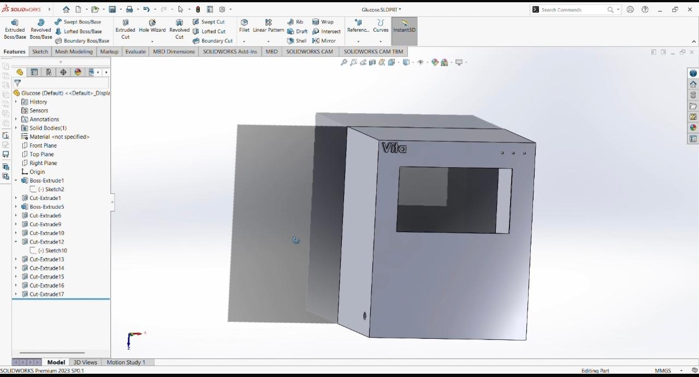

VITA MEDICAL PROTOCOL
Smart
Vital Signs
Monitor
Graduation Project 2026
Faculty of Applied Health Sciences Technology
Technology of Biomedical Equipment

The VITA Solution

- The VITA Objective: A single integrated portable platform.
- Continuous, real-time multi-parameter tracking (no missed events).
- Intelligent, automated signal interpretation replacing manual observation.
- Meaningful alarms with recommended clinical actions.
- The system integrates biomedical sensors with embedded electronics.
- Multi-tier architecture: Acquisition, Processing, and Display.
- Signal conditioning and preprocessing happen in real-time.
- VITA guarantees continuous monitoring with no data loss.
System Architecture

- Custom enclosure modeled using SolidWorks 3D CAD.
- Manufactured using 3D printing technology.
- Dimensions: 26cm x 21.4cm x 15cm.
- Designed for portability, proper ventilation, and easy screen/sensor access.
Mechanical Design

SolidWorks CAD Model

3D Printed Prototype
Market Comparison
Commercial Patient Monitors
$1,500 - $5,000+
VITA Prototype Cost
~ $450
Economic Feasibility
- Cost-Effective: Highly accessible for rural hospitals & clinics.
- Home Care: Affordable for personal patient monitoring at home.
- Local Manufacturing: Utilizing 3D printing and open-source tech reduces reliance on imports.
Cost Feasibility

VITA — Smart Vital Signs Monitor
Thank You
Graduation Project 2026 · Faculty of Applied Health Sciences Technology
Technology of Biomedical Equipment
Questions & Answers
We welcome your feedback
Supervisors
Dr. Ghada El-Banby